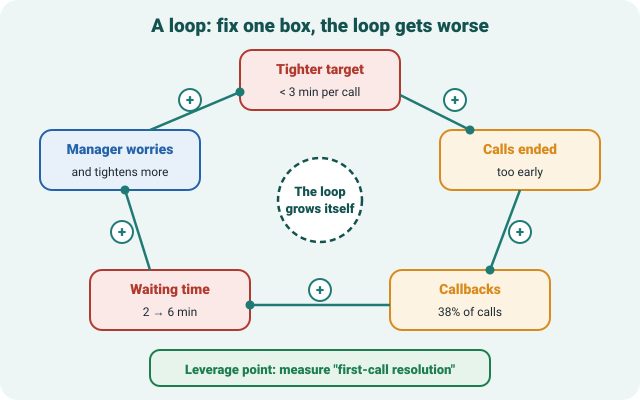

K3 · Problem solving and decision making › Level 4 Proficient
See the whole system before you propose a fix
This lesson completes Sheet 1: Impact map of your specialist toolkit. Print template. It builds on Find the root cause (Level 3).
1. Objectives
- Draw a 5–7 box impact map for a recurring problem, with at least one loop.
- Name two knock-on effects of a proposal before you present it.
2. Retrieval warm-up
These two questions review Level 3. Answer without looking back.
- When you ask "Why?", should you ask about the person or the process? Why?
- How is a quick fix different from a root-cause fix?
Answers
- The process. Asking about the person usually stops at blame and finds nothing to fix.
- A quick fix stops today's damage. A root-cause fix stops the problem from happening again.
Review: Find the root cause.
3. Explanation
At Level 3, you followed one straight chain of causes. At Level 4, you see that many causes affect each other.
A system is the teams, people, rules and numbers that all influence each other. Fixing one part can break another.
Three things to look for:
- Knock-on effects. One change causes another. Ask "and then what?" at least twice.
- Loops. A increases B, and B increases A again. A loop makes a problem grow by itself, or balance itself.
- Delays. Results may take weeks to appear. People often drop a good solution because it does not work at once.

How to draw an impact map:
- Write the problem in the middle. Each box is something that can go up or down, such as "number of repeat calls".
- Join the boxes with arrows. Write "+" if they move the same way, "−" if they move in opposite ways.
- Look for a closed loop. It is often the reason the problem keeps coming back.
A leverage point is where a small change has a large, lasting effect. It is usually in a target, an information flow or a rule. It is rarely in reminding people to try harder.
Sheet 1. Impact map
- Recurring problemDescribed with numbers and a time period.
- 5–7 impact boxesEach box can go up or down.
- Arrows and loopsMark + or −, circle any closed loop.
- Leverage pointThe smallest change that breaks the loop.
- And then what?Two knock-on effects of your proposal.
The map is a hypothesis, not the truth. Show it to people in other teams and let them correct it.
4. Workplace example
Hypothetical scenario. Grace is a senior specialist at the customer service call centre of a telecom company. Customer waiting time has risen from 2 to 6 minutes in 3 months.
Her manager plans a new target: every call under 3 minutes. Grace asks for two days to draw a map.
She gathers data. 38% of calls are customers calling a second time about the same issue. This share has grown since an earlier speed target. She draws the loop in Figure 1.
She asks "and then what?" about the manager's proposal. First: staff cut calls even sooner. Second: more customers call back, and waiting time rises again.
She proposes changing the leverage point. Measure the "first-call resolution rate" instead of time per call. Test it for 4 weeks on one shift. She warns in advance: waiting time may not fall in the first week.
After 4 weeks, repeat calls on the test shift fall to 21%.
Why this works: Grace uses data to show the loop. She names the knock-on effects of both proposals. She warns about the delay, so nobody gives up too early.
5. Practice
Hypothetical scenario. You are a lead technician in a metalwork factory. Machines often break down without warning. Each time, the maintenance team does emergency repairs. Because they are busy with repairs, they skip scheduled maintenance. The director proposes overtime for the maintenance team.
Draw a 5–7 box impact map. Find the loop. Name two knock-on effects of the overtime proposal.
Hint 1
Start from the box "unplanned breakdowns". Which box does it increase? Which box does that one reduce?
Hint 2
What does overtime solve this week? After 2 months, what happens to the team's health and error rate?
Model answer
- Loop: more breakdowns mean more emergency repair hours. More repair hours mean fewer maintenance hours. Less maintenance wears the machines down, so they break down more.
- And then what? (overtime) First: repairs are faster this week. Second: the team gets tired and makes mistakes, and maintenance is still skipped, so the loop keeps running.
- Leverage point: lock in 4 hours of maintenance a week for the machines that fail most, even when urgent work comes in. Test for 6 weeks, then count breakdowns.
- Warn about the delay: the first 2–3 weeks may show no drop.
(The figures are hypothetical.)
6. Self-check
Choose an answer. Every option has an explanation.
Question 1. A shop pays staff a bonus per item sold. After 2 months, returns rise sharply. Which view is a systems view?
-
Not quite. This only reminds people. It does not deal with the bonus that pushes staff to oversell.
-
Correct. Correct. The target is one box in the system. It may be creating the problem.
-
Not quite. This hides the symptom and loses customer trust, a worse knock-on effect.
Question 2. Which of these is a loop?
-
Not quite. This is a straight chain. Slow traffic does not affect the rain.
-
Correct. Correct. The last box feeds back into the first, so the problem grows by itself.
-
Not quite. This is a straight process with no feedback.
Question 3. Your proposal will take about 3 weeks to show results. What should you do when you present it?
-
Not quite. If nothing changes in week one, people may drop a good solution.
-
Correct. Correct. Naming the delay helps people stay patient and know when to judge.
-
Not quite. Promising something you know is false costs trust when results are slow.
Question 4. Where is a leverage point usually found?
-
Not quite. Reminders rarely change a system. The problem usually comes back.
-
Correct. Correct. Changing these can break a loop at low cost.
-
Not quite. Extra resources are sometimes needed, but they are costly and often do not break the loop.
7. Reflection
- Which problem at your workplace "never gets fixed"? Could it be inside a loop?
- Which target at your workplace is right for one box but may be wrong for the whole system?
8. Real-world application
In the next 7 days, choose one recurring problem at work. Complete Sheet 1. Show the map to someone in another team, and note one thing they correct.
9. Metadata
| skill | K3 · Problem solving and decision making |
|---|---|
| level | Level 4 · Proficient |
| group | N4 |
| framework_map | WEF: Analytical thinking; CSfW: 3b Make decisions; 3c Identify and solve problems; SkillsFuture CCS: Problem Solving; Sense Making; NACE: Critical Thinking; LifeComp: L2 Critical thinking (reference only) |
| original | Vietnamese version |
| updated | 2026-11-14 |
Finish the lesson
Mark it as done and the site suggests reviews after 1, 3 and 7 days. The data stays on your device only.
Suggested reviews: